Deductive and plausible reasoning
PROBABILITY THEORY
THE LOGIC OF SCIENCE
PROBABILITY THEORY THE LOGIC OF SCIENCE
E. T. Jaynes
edited by
G. Larry Bretthorst
Cambridge University Press The Edinburgh Building, Cambridge , United Kingdom
First published in print format
ISBN-13 978-0-521-59271-0 hardback
ISBN-13 978-0-511-06589-7 eBook (NetLibrary)
© E. T. Jaynes 2003
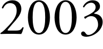
Information on this title: www.cambridge.org/9780521592710
This book is in copyright. Subject to statutory exception and to the provision of relevant collective licensing agreements, no reproduction of any part may take place without the written permission of Cambridge University Press.
ISBN-10 0-511-06589-2 eBook (NetLibrary)
ISBN-10 0-521-59271-2 hardback
Cambridge University Press has no responsibility for the persistence or accuracy of s for external or third-party internet websites referred to in this book, and does not guarantee that any content on such websites is, or will remain, accurate or appropriate.
Published in the United States by Cambridge University Press, New York www.cambridge.org
Dedicated to the memory of
Sir Harold Jeffreys, who saw the truth and preserved it.
Contents
Editor’s foreword
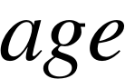 xvii
Preface
Part I
Principles and elementary applications
Plausible reasoning
Deductive and plausible reasoning
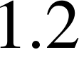
Analogies with physical theories
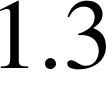
The thinking computer
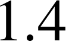
Introducing the robot

Boolean algebra
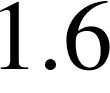
Adequate sets of operations
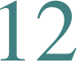
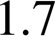
The basic desiderata
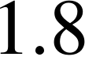
Comments
1.8.1
Common language vs. formal logic
1.8.2
Nitpicking
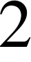
The quantitative rules
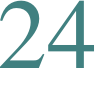
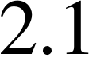
The product rule
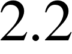
The sum rule
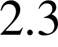
Qualitative properties
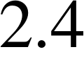
Numerical values
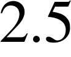
Notation and finite-sets policy
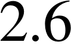
Comments
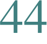
2.6.1
‘Subjective’ vs. ‘objective’
2.6.2
G¨odel’s theorem

2.6.3
Venn diagrams
2.6.4
The ‘Kolmogorov axioms’
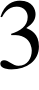
Elementary sampling theory
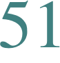
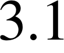
Sampling without replacement
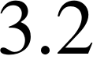
Logic vs. propensity
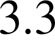
Reasoning from less precise information
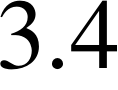
Expectations

Other forms and extensions

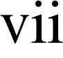 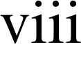
Contents
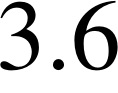
Probability as a mathematical tool
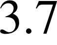
The binomial distribution
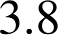
Sampling with replacement
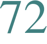
3.8.1
Digression: a sermon on reality vs. models
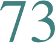
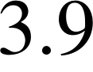
Correction for correlations
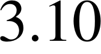
Simplification
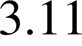
Comments
3.11.1
A look ahead

Elementary hypothesis testing

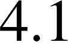
Prior probabilities

Testing binary hypotheses with binary data
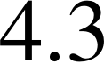
Nonextensibility beyond the binary case
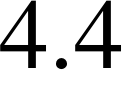
Multiple hypothesis testing
4.4.1
Digression on another derivation
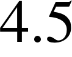
Continuous probability distribution functions
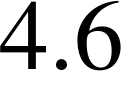
Testing an infinite number of hypotheses
4.6.1
Historical digression
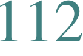
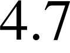
Simple and compound (or composite) hypotheses
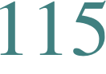
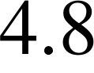
Comments
4.8.1
Etymology
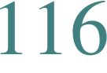
4.8.2
What have we accomplished?
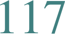
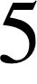
Queer uses for probability theory
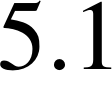
Extrasensory perception
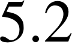
Mrs Stewart’s telepathic powers
5.2.1
Digression on the normal approximation
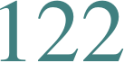
5.2.2
Back to Mrs Stewart
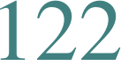
Converging and diverging views

Visual perception – evolution into Bayesianity?
The discovery of Neptune
5.5.1
Digression on alternative hypotheses
5.5.2
Back to Newton
Horse racing and weather forecasting
5.6.1
Discussion
Paradoxes of intuition
Bayesian jurisprudence
Comments
5.9.1
What is queer?
Elementary parameter estimation
Inversion of the urn distributions

unknown
Uniform prior
Predictive distributions
Contents

Truncated uniform priors
A concave prior
The binomial monkey prior
Metamorphosis into continuous parameter estimation

Estimation with a binomial sampling distribution
6.9.1
Digression on optional stopping
Compound estimation problems
A simple Bayesian estimate: quantitative prior information
6.11.1
From posterior distribution function to estimate
Effects of qualitative prior information
Choice of a prior
On with the calculation!
The Jeffreys prior
The point of it all
Interval estimation
Calculation of variance

Generalization and asymptotic forms
Rectangular sampling distribution
Small samples
Mathematical trickery
Comments
The central, Gaussian or normal distribution
The gravitating phenomenon
The Herschel–Maxwell derivation
The Gauss derivation

Historical importance of Gauss’s result
The Landon derivation
Why the ubiquitous use of Gaussian distributions?

Why the ubiquitous success?
What estimator should we use?
Error cancellation

The near irrelevance of sampling frequency distributions
The remarkable efficiency of information transfer
Other sampling distributions

Nuisance parameters as safety devices
More general properties
Convolution of Gaussians
The central limit theorem
Accuracy of computations
Galton’s discovery
Population dynamics and Darwinian evolution
Evolution of humming-birds and flowers

Contents
Application to economics
The great inequality of Jupiter and Saturn
Resolution of distributions into Gaussians

Hermite polynomial solutions
Fourier transform relations
There is hope after all

Comments
7.27.1
Terminology again
Sufficiency, ancillarity, and all that
Sufficiency
Fisher sufficiency
8.2.1
Examples
8.2.2
The Blackwell–Rao theorem
Generalized sufficiency
Sufficiency plus nuisance parameters
The likelihood principle
Ancillarity
Generalized ancillary information
Asymptotic likelihood: Fisher information

Combining evidence from different sources
Pooling the data
8.10.1
Fine-grained propositions
Sam’s broken thermometer
Comments
8.12.1
The fallacy of sample re-use
8.12.2
A folk theorem
8.12.3
Effect of prior information
8.12.4
Clever tricks and gamesmanship
Repetitive experiments: probability and frequency
Physical experiments
The poorly informed robot
Induction
Are there general inductive rules?
Multiplicity factors
Partition function algorithms
9.6.1
Solution by inspection
Entropy algorithms
Another way of looking at it
Entropy maximization
Probability and frequency
Significance tests
9.11.1
Implied alternatives
Contents
Comparison of psi and chi-squared
The chi-squared test
Generalization
Halley’s mortality table
Comments

9.16.1
The irrationalists
9.16.2
Superstitions

Physics of ‘random experiments’
An interesting correlation
Historical background
How to cheat at coin and die tossing
10.3.1
Experimental evidence
Bridge hands
General random experiments
Induction revisited
But what about quantum theory?
Mechanics under the clouds
More on coins and symmetry
10.10
Independence of tosses
10.11
The arrogance of the uninformed
Part II
Advanced applications
Discrete prior probabilities: the entropy principle
A new kind of prior information
Minimum
Entropy: Shannon’s theorem
The Wallis derivation

An example
Generalization: a more rigorous proof
Formal properties of maximum entropy
distributions
Conceptual problems – frequency correspondence
Comments
Ignorance priors and transformation groups
What are we trying to do?
Ignorance priors
Continuous distributions
Transformation groups
12.4.1
Location and scale parameters
12.4.2
A Poisson rate
12.4.3
Unknown probability for success
12.4.4
Bertrand’s problem
Comments
Contents
Decision theory, historical background

Inference vs. decision
Daniel Bernoulli’s suggestion
The rationale of insurance
Entropy and utility
The honest weatherman
Reactions to Daniel Bernoulli and Laplace
Wald’s decision theory
Parameter estimation for minimum loss
Reformulation of the problem
13.10
Effect of varying loss functions
13.11
General decision theory
13.12
Comments
13.12.1
‘Objectivity’ of decision theory
13.12.2
Loss functions in human society
13.12.3
A new look at the Jeffreys prior
13.12.4
Decision theory is not fundamental
13.12.5
Another dimension?
Simple applications of decision theory
Definitions and preliminaries
Sufficiency and information
Loss functions and criteria of optimum
performance
A discrete example
How would our robot do it?

Historical remarks
14.6.1
The classical matched filter
The widget problem
14.7.1
Solution for Stage 2
14.7.2
Solution for Stage 3
14.7.3
Solution for Stage 4
Comments
Paradoxes of probability theory
How do paradoxes survive and grow?
Summing a series the easy way
Nonconglomerability
The tumbling tetrahedra
Solution for a finite number of tosses
Finite vs. countable additivity
The Borel–Kolmogorov paradox
The marginalization paradox

15.8.1
On to greater disasters
Contents
Discussion
15.9.1
The DSZ Example #5
15.9.2
Summary
15.10
A useful result after all?
15.11
How to mass-produce paradoxes
15.12
Comments
Orthodox methods: historical background
The early problems
Sociology of orthodox statistics
Ronald Fisher, Harold Jeffreys, and Jerzy Neyman

Pre-data and post-data considerations
The sampling distribution for an estimator
Pro-causal and anti-causal bias
What is real, the probability or the phenomenon?
Comments
16.8.1
Communication difficulties
Principles and pathology of orthodox statistics
Information loss
Unbiased estimators

Pathology of an unbiased estimate
The fundamental inequality of the sampling variance
Periodicity: the weather in Central Park
17.5.1
The folly of pre-filtering data
A Bayesian analysis
The folly of randomization

Fisher: common sense at Rothamsted
17.8.1
The Bayesian safety device

Missing data

17.10
Trend and seasonality in time series
17.10.1
Orthodox methods
17.10.2
The Bayesian method
17.10.3
Comparison of Bayesian and orthodox
estimates
17.10.4
An improved orthodox estimate
17.10.5
The orthodox criterion of performance
17.11
The general case
17.12
Comments
distribution and rule of succession
Memory storage for old robots
Relevance
A surprising consequence
Outer and inner robots
Contents
An application
Laplace’s rule of succession
Jeffreys’ objection
Bass or carp?
So where does this leave the rule?
18.10
Generalization
18.11
Confirmation and weight of evidence
18.11.1
Is indifference based on knowledge or ignorance?
18.12
Carnap’s inductive methods
18.13
Probability and frequency in exchangeable sequences
18.14
Prediction of frequencies
18.15
One-dimensional neutron multiplication
18.15.1
The frequentist solution
18.15.2
The Laplace solution
18.16
The de Finetti theorem
18.17
Comments
Physical measurements
Reduction of equations of condition
Reformulation as a decision problem
19.2.1
Sermon on Gaussian error distributions

The underdetermined case: is singular
The overdetermined case: can be made nonsingular
Numerical evaluation of the result
Accuracy of the estimates

Comments
19.7.1
A paradox

Model comparison
Formulation of the problem

The fair judge and the cruel realist

20.2.1
Parameters known in advance
20.2.2
Parameters unknown
But where is the idea of simplicity?
An example: linear response models
20.4.1
Digression: the old sermon still another time
Comments
20.5.1
Final causes

Outliers and robustness
The experimenter’s dilemma

Robustness

The two-model model
Exchangeable selection
The general Bayesian solution
Contents
Pure outliers
One receding datum
Introduction to communication theory
Origins of the theory
The noiseless channel
The information source
Does the English language have statistical properties?
Optimum encoding: letter frequencies known
Better encoding from knowledge of digram frequencies
Relation to a stochastic model
The noisy channel
Appendix A
Other approaches to probability theory
The Kolmogorov system of probability
The de Finetti system of probability
Comparative probability
Holdouts against universal comparability
Speculations about lattice theories
Appendix B
Mathematical formalities and style

Notation and logical hierarchy
Our ‘cautious approach’ policy
Willy Feller on measure theory
Kronecker vs. Weierstrasz
What is a legitimate mathematical function?
B.5.1
Delta-functions
B.5.2
Nondifferentiable functions

B.5.3
Bogus nondifferentiable functions

Counting infinite sets?
The Hausdorff sphere paradox and mathematical
diseases
What am I supposed to publish?
Mathematical courtesy
Appendix C
Convolutions and cumulants

Relation of cumulants and moments
Examples
References
Bibliography
Author index
Subject index
Editor’s foreword
E. T. Jaynes died April 30, 1998. Before his death he asked me to finish and publish his book on probability theory. I struggled with this for some time, because there is no doubt in my mind that Jaynes wanted this book finished. Unfortunately, most of the later chapters, Jaynes’ intended volume 2 on applications, were either missing or incomplete, and some of the early chapters also had missing pieces. I could have written these latter chapters and filled in the missing pieces, but if I did so, the work would no longer be Jaynes’; rather, it would be a Jaynes–Bretthorst hybrid with no way to tell which material came from which author. In the end, I decided the missing chapters would have to stay missing – the work would remain Jaynes’.
There were a number of missing pieces of varying length that Jaynes had marked by inserting the phrase ‘much more coming’. I could have left these comments in the text, but they were ugly and they made the book look very incomplete. Jaynes intended this book to serve as both a reference and a text book. Consequently, there are question boxes (Exercises) scattered throughout most chapters. In the end, I decided to replace the much more coming’ comments by introducing ‘Editor’s’ Exercises. If you answer these questions, you will have filled in the missing material.
Jaynes wanted to include a series of computer programs that implemented some of the calculations in the book. I had originally intended to include these programs. But, as time went on, it became increasingly obvious that many of the programs were not available, and the ones that were were written in a particularly obscure form of basic (it was the programs that were obscure, not the basic). Consequently, I removed the references to these programs and, where necessary, inserted a few sentences to direct people to the necessary software tools to implement the calculations.
Numerous references were missing and had to be supplied. Usually the information available, a last name and date, was sufficient to find one or more probable references. When there were several good candidates, and I was unable to determine which Jaynes intended, I included multiple references and modified the citation. Sometimes the information was so vague that no good candidates were available. Fortunately, I was able to remove the citation with no detrimental effect. To enable readers to distinguish between cited works and other published sources, Jaynes’ original annotated bibliography has been split into two sections: a Reference list and a Bibliography.
Finally, while I am the most obvious person who has worked on getting this book into publication, I am not the only person to do so. Some of Jaynes’ closest friends have assisted me in completing this work. These include Tom Grandy, Ray Smith, Tom Loredo, Myron Tribus and John Skilling, and I would like to thank them for their assistance. I would also like to thank Joe Ackerman for allowing me to take the time necessary to get this work published.
G. Larry Bretthorst
Preface
The following material is addressed to readers who are already familiar with applied mathematics, at the advanced undergraduate level or preferably higher, and with some field, such as physics, chemistry, biology, geology, medicine, economics, sociology, engineering, operations research, etc., where inference is needed. A previous acquaintance with probability and statistics is not necessary; indeed, a certain amount of innocence in this area may be desirable, because there will be less to unlearn.
We are concerned with probability theory and all of its conventional mathematics, but now viewed in a wider context than that of the standard textbooks. Every chapter after the first has ‘new’ (i.e. not previously published) results that we think will be found interesting and useful. Many of our applications lie outside the scope of conventional probability theory as currently taught. But we think that the results will speak for themselves, and that something like the theory expounded here will become the conventional probability theory of the future.
History
The present form of this work is the result of an evolutionary growth over many years. My interest in probability theory was stimulated first by reading the work of Harold Jeffreys (1939) and realizing that his viewpoint makes all the problems of theoretical physics appear in a very different light. But then, in quick succession, discovery of the work of R. T. Cox (1946), Shannon (1948) and P´olya (1954) opened up new worlds of thought, whose exploration has occupied my mind for some 40 years. In this much larger and permanent world of rational thinking in general, the current problems of theoretical physics appeared as only details of temporary interest.
The actual writing started as notes for a series of lectures given at Stanford University in 1956, expounding the then new and exciting work of George P´olya on ‘Mathematics and Plausible Reasoning’. He dissected our intuitive ‘common sense’ into a set of elementary qualitative desiderata and showed that mathematicians had been using them all along to
By ‘inference’ we mean simply: deductive reasoning whenever enough information is at hand to permit it; inductive or plausible
reasoning
when – as is almost invariably the case in real problems – the
necessary information is not available. But if a problem
can
be solved by deductive reasoning, probability theory is not needed for
it; thus our topic is the optimal processing of incomplete
information.
guide the early stages of discovery, which necessarily precede the finding of a rigorous proof. The results were much like those of James Bernoulli’s Art of Conjecture (1713), developed analytically by Laplace in the late 18th century; but P´olya thought the resemblance to be only qualitative.
However, P´olya demonstrated this qualitative agreement in such complete, exhaustive detail as to suggest that there must be more to it. Fortunately, the consistency theorems of R. T. Cox were enough to clinch matters; when one added P´olya’s qualitative conditions to them the result was a proof that, if degrees of plausibility are represented by real numbers, then there is a uniquely determined set of quantitative rules for conducting inference. That is, any other rules whose results conflict with them will necessarily violate an elementary – and nearly inescapable – desideratum of rationality or consistency.
But the final result was just the standard rules of probability theory, given already by Daniel Bernoulli and Laplace; so why all the fuss? The important new feature was that these rules were now seen as uniquely valid principles of logic in general, making no reference to ‘chance’ or ‘random variables’; so their range of application is vastly greater than had been supposed in the conventional probability theory that was developed in the early 20th century. As a result, the imaginary distinction between ‘probability theory’ and ‘statistical inference’ disappears, and the field achieves not only logical unity and simplicity, but far greater technical power and flexibility in applications.
In the writer’s lectures, the emphasis was therefore on the quantitative formulation of P´olya’s viewpoint, so it could be used for general problems of scientific inference, almost all of which arise out of incomplete information rather than ‘randomness’. Some personal reminiscences about George P´olya and this start of the work are in Chapter 5.
Once the development of applications started, the work of Harold Jeffreys, who had seen so much of it intuitively and seemed to anticipate every problem I would encounter, became again the central focus of attention. My debt to him is only partially indicated by the dedication of this book to his memory. Further comments about his work and its influence on mine are scattered about in several chapters.
In the years 1957–1970 the lectures were repeated, with steadily increasing content, at many other universities and research laboratories.  In this growth it became clear gradually that the outstanding difficulties of conventional ‘statistical inference’ are easily understood and overcome. But the rules which now took their place were quite subtle conceptually, and it required some deep thinking to see how to apply them correctly. Past difficulties, which had led to rejection of Laplace’s work, were seen finally as only misapplications, arising usually from failure to define the problem unambiguously or to appreciate the cogency of seemingly trivial side information, and easy to correct once this is recognized. The various relations between our ‘extended logic’ approach and the usual ‘random variable’ one appear in almost every chapter, in many different forms.
In this growth it became clear gradually that the outstanding difficulties of conventional ‘statistical inference’ are easily understood and overcome. But the rules which now took their place were quite subtle conceptually, and it required some deep thinking to see how to apply them correctly. Past difficulties, which had led to rejection of Laplace’s work, were seen finally as only misapplications, arising usually from failure to define the problem unambiguously or to appreciate the cogency of seemingly trivial side information, and easy to correct once this is recognized. The various relations between our ‘extended logic’ approach and the usual ‘random variable’ one appear in almost every chapter, in many different forms.
Eventually, the material grew to far more than could be presented in a short series of lectures, and the work evolved out of the pedagogical phase; with the clearing up of old difficulties accomplished, we found ourselves in possession of a powerful tool for dealing with new problems. Since about 1970 the accretion has continued at the same pace, but fed instead by the research activity of the writer and his colleagues. We hope that the final result has retained enough of its hybrid origins to be usable either as a textbook or as a reference work; indeed, several generations of students have carried away earlier versions of our notes, and in turn taught it to their students.
In view of the above, we repeat the sentence that Charles Darwin wrote in the Introduction to his Origin of Species: ‘I hope that I may be excused for entering on these personal details, as I give them to show that I have not been hasty in coming to a decision.’ But it might be thought that work done 30 years ago would be obsolete today. Fortunately, the work of Jeffreys, P´olya and Cox was of a fundamental, timeless character whose truth does not change and whose importance grows with time. Their perception about the nature of inference, which was merely curious 30 years ago, is very important in a half-dozen different areas of science today; and it will be crucially important in all areas 100 years hence.
Foundations
From many years of experience with its applications in hundreds of real problems, our views on the foundations of probability theory have evolved into something quite complex, which cannot be described in any such simplistic terms as ‘pro-this’ or ‘anti-that’. For example, our system of probability could hardly be more different from that of Kolmogorov, in style, philosophy, and purpose. What we consider to be fully half of probability theory as it is needed in current applications – the principles for assigning probabilities by logical analysis of incomplete information – is not present at all in the Kolmogorov system.
Yet, when all is said and done, we find ourselves, to our own surprise, in agreement with Kolmogorov and in disagreement with his critics, on nearly all technical issues. As noted in Appendix A, each of his axioms turns out to be, for all practical purposes, derivable from the P´olya–Cox desiderata of rationality and consistency. In short, we regard our system of probability as not contradicting Kolmogorov’s; but rather seeking a deeper logical foundation that permits its extension in the directions that are needed for modern applications. In this endeavor, many problems have been solved, and those still unsolved appear where we should naturally expect them: in breaking into new ground.
As another example, it appears at first glance to everyone that we are in very close agreement with the de Finetti system of probability. Indeed, the writer believed this for some time. Yet when all is said and done we find, to our own surprise, that little more than a loose philosophical agreement remains; on many technical issues we disagree strongly with de Finetti. It appears to us that his way of treating infinite sets has opened up a Pandora’s box of useless and unnecessary paradoxes; nonconglomerability and finite additivity are examples discussed in Chapter 15.
Infinite-set paradoxing has become a morbid infection that is today spreading in a way that threatens the very life of probability theory, and it requires immediate surgical removal. In our system, after this surgery, such paradoxes are avoided automatically; they cannot arise from correct application of our basic rules, because those rules admit only finite sets and infinite sets that arise as well-defined and well-behaved limits of finite sets. The paradoxing was caused by (1) jumping directly into an infinite set without specifying any limiting process to define its properties; and then (2) asking questions whose answers depend on how the limit was approached.
For example, the question: ‘What is the probability that an integer is even?’ can have any answer we please in (0, 1), depending on what limiting process is used to define the ‘set of all integers’ (just as a conditionally convergent series can be made to converge to any number we please, depending on the order in which we arrange the terms).
In our view, an infinite set cannot be said to possess any ‘existence’ and mathematical properties at all – at least, in probability theory – until we have specified the limiting process that is to generate it from a finite set. In other words, we sail under the banner of Gauss, Kronecker, and Poincar´e rather than Cantor, Hilbert, and Bourbaki. We hope that readers who are shocked by this will study the indictment of Bourbakism by the mathematician Morris Kline (1980), and then bear with us long enough to see the advantages of our approach. Examples appear in almost every chapter.
Comparisons
For many years, there has been controversy over ‘frequentist’ versus ‘Bayesian’ methods of inference, in which the writer has been an outspoken partisan on the Bayesian side. The record of this up to 1981 is given in an earlier book (Jaynes, 1983). In these old works there was a strong tendency, on both sides, to argue on the level of philosophy or ideology. We can now hold ourselves somewhat aloof from this, because, thanks to recent work, there is no longer any need to appeal to such arguments. We are now in possession of proven theorems and masses of worked-out numerical examples. As a result, the superiority of Bayesian methods is now a thoroughly demonstrated fact in a hundred different areas. One can argue with a philosophy; it is not so easy to argue with a computer printout, which says to us: ‘Independently of all your philosophy, here are the facts of actual performance.’ We point this out in some detail whenever there is a substantial difference in the final results. Thus we continue to argue vigorously for the Bayesian methods; but we ask the reader to note that our arguments now proceed by citing facts rather than proclaiming a philosophical or ideological position.
However, neither the Bayesian nor the frequentist approach is universally applicable, so in the present, more general, work we take a broader view of things. Our theme is simply: probability theory as extended logic. The ‘new’ perception amounts to the recognition that the mathematical rules of probability theory are not merely rules for calculating frequencies of ‘random variables’; they are also the unique consistent rules for conducting inference (i.e. plausible reasoning) of any kind, and we shall apply them in full generality to that end.
It is true that all ‘Bayesian’ calculations are included automatically as particular cases of our rules; but so are all ‘frequentist’ calculations. Nevertheless, our basic rules are broader than either of these, and in many applications our calculations do not fit into either category.
To explain the situation as we see it presently: The traditional ‘frequentist’ methods which use only sampling distributions are usable and useful in many particularly simple, idealized problems; however, they represent the most proscribed special cases of probability theory, because they presuppose conditions (independent repetitions of a ‘random experiment’ but no relevant prior information) that are hardly ever met in real problems. This approach is quite inadequate for the current needs of science.
In addition, frequentist methods provide no technical means to eliminate nuisance parameters or to take prior information into account, no way even to use all the information in the data when sufficient or ancillary statistics do not exist. Lacking the necessary theoretical principles, they force one to ‘choose a statistic’ from intuition rather than from probability theory, and then to invent ad hoc devices (such as unbiased estimators, confidence intervals, tail-area significance tests) not contained in the rules of probability theory. Each of these is usable within the small domain for which it was invented but, as Cox’s theorems guarantee, such arbitrary devices always generate inconsistencies or absurd results when applied to extreme cases; we shall see dozens of examples.
AllofthesedefectsarecorrectedbyuseofBayesianmethods,whichareadequateforwhat we might call ‘well-developed’ problems of inference. As Harold Jeffreys demonstrated, they have a superb analytical apparatus, able to deal effortlessly with the technical problems on which frequentist methods fail. They determine the optimal estimators and algorithms automatically, while taking into account prior information and making proper allowance for nuisance parameters, and, being exact, they do not break down – but continue to yield reasonable results – in extreme cases. Therefore they enable us to solve problems of far greatercomplexitythancanbediscussedatallinfrequentistterms.Oneofourmainpurposes is to show how all this capability was contained already in the simple product and sum rules of probability theory interpreted as extended logic, with no need for – indeed, no room for – ad hoc devices.
Before Bayesian methods can be used, a problem must be developed beyond the ‘exploratory phase’ to the point where it has enough structure to determine all the needed apparatus (a model, sample space, hypothesis space, prior probabilities, sampling distribution). Almost all scientific problems pass through an initial exploratory phase in which we have need for inference, but the frequentist assumptions are invalid and the Bayesian apparatus is not yet available. Indeed, some of them never evolve out of the exploratory phase. Problems at this level call for more primitive means of assigning probabilities directly out of our incomplete information.
For this purpose, the Principle of maximum entropy has at present the clearest theoretical justification and is the most highly developed computationally, with an analytical apparatus as powerful and versatile as the Bayesian one. To apply it we must define a sample space, but do not need any model or sampling distribution. In effect, entropy maximization creates a model for us out of our data, which proves to be optimal by so many different criteria that it is hard to imagine circumstances where one would not want to use it in a problem where we have a sample space but no model.
Bayesian and maximum entropy methods differ in another respect. Both procedures yield the optimal inferences from the information that went into them, but we may choose a model for Bayesian analysis; this amounts to expressing some prior knowledge – or some working hypothesis – about the phenomenon being observed. Usually, such hypotheses extend beyond what is directly observable in the data, and in that sense we might say that Bayesian methods are – or at least may be – speculative. If the extra hypotheses are true, then we expect that the Bayesian results will improve on maximum entropy; if they are false, the Bayesian inferences will likely be worse.
On the other hand, maximum entropy is a nonspeculative procedure, in the sense that it invokes no hypotheses beyond the sample space and the evidence that is in the available data. Thus it predicts only observable facts (functions of future or past observations) rather than values of parameters which may exist only in our imagination. It is just for that reason that maximum entropy is the appropriate (safest) tool when we have very little knowledge beyond the raw data; it protects us against drawing conclusions not warranted by the data. But when the information is extremely vague, it may be difficult to define any appropriate sample space, and one may wonder whether still more primitive principles than maximum entropy can be found. There is room for much new creative thought here.
For the present, there are many important and highly nontrivial applications where Maximum Entropy is the only tool we need. Part 2 of this work considers them in detail; usually, they require more technical knowledge of the subject-matter area than do the more general applications studied in Part 1. All of presently known statistical mechanics, for example, is included in this, as are the highly successful Maximum Entropy spectrum analysis and image reconstruction algorithms in current use. However, we think that in the future the latter two applications will evolve into the Bayesian phase, as we become more aware of the appropriate models and hypothesis spaces which enable us to incorporate more prior information.
We are conscious of having so many theoretical points to explain that we fail to present as many practical worked-out numerical examples as we should. Fortunately, three recent books largely make up this deficiency, and should be considered as adjuncts to the present work: Bayesian Spectrum Analysis and Parameter Estimation (Bretthorst, 1988), Maximum Entropy in Action (Buck and Macaulay, 1991), and Data Analysis A Bayesian Tutorial (Sivia, 1996), are written from a viewpoint essentially identical to ours and present a wealth of real problems carried through to numerical solutions. Of course, these works do not containnearlyasmuchtheoreticalexplanationasdoesthepresentone.Also,theProceedings
These concern efficient information handling; for example, (1) the model created is the simplest one that captures all the
information in the constraints (Chapter 11); (2) it is the unique model for which the constraints would have been sufficient
statistics (Chapter 8); (3) if viewed as constructing a sampling distribution for subsequent Bayesian inference from new data
the only property of the measurement errors in that are used in that subsequent inference are the ones about which that sampling
distribution contained some definite prior information (Chapter 7). Thus the formalism automatically takes into account all the
information we have, but avoids assuming information that we do not have. This contrasts sharply with orthodox methods, where
one does not think in terms of information at all, and in general violates both of these desiderata. volumes of the various annual MAXENT workshops since 1981 consider a great variety of useful applications.
Mental activity
As one would expect already from P´olya’s examples, probability theory as extended logic reproduces many aspects of human mental activity, sometimes in surprising and even disturbing detail. In Chapter 5 we find our equations exhibiting the phenomenon of a person who tells the truth and is not believed, even though the disbelievers are reasoning consistently. The theory explains why and under what circumstances this will happen.
The equations also reproduce a more complicated phenomenon, divergence of opinions. One might expect that open discussion of public issues would tend to bring about a general consensus. On the contrary, we observe repeatedly that when some controversial issue has been discussed vigorously for a few years, society becomes polarized into two opposite extreme camps; it is almost impossible to find anyone who retains a moderate view. Probability theory as logic shows how two persons, given the same information, may have their opinions driven in opposite directions by it, and what must be done to avoid this.
In such respects, it is clear that probability theory is telling us something about the way our own minds operate when we form intuitive judgments, of which we may not have been consciously aware. Some may feel uncomfortable at these revelations; others may see in them useful tools for psychological, sociological, or legal research.
What is ‘safe’?
We are not concerned here only with abstract issues of mathematics and logic. One of the main practical messages of this work is the great effect of prior information on the conclusions that one should draw from a given data set. Currently, much discussed issues, such as environmental hazards or the toxicity of a food additive, cannot be judged rationally if one looks only at the current data and ignores the prior information that scientists have about the phenomenon. This can lead one to overestimate or underestimate the danger.
A common error, when judging the effects of radioactivity or the toxicity of some substance, is to assume a linear response model without threshold (i.e. without a dose rate below which there is no ill effect). Presumably there is no threshold effect for cumulative poisons like heavy metal ions (mercury, lead), which are eliminated only very slowly, if at all. But for virtually every organic substance (such as saccharin or cyclamates), the existence of a finite metabolic rate means that there must exist a finite threshold dose rate, below which the substance is decomposed, eliminated, or chemically altered so rapidly that it causes no ill effects. If this were not true, the human race could never have survived to the present time, in view of all the things we have been eating.
Indeed, every mouthful of food you and I have ever taken contained many billions of kinds of complex molecules whose structure and physiological effects have never been determined – and many millions of which would be toxic or fatal in large doses. We cannot doubt that we are daily ingesting thousands of substances that are far more dangerous than saccharin – but in amounts that are safe, because they are far below the various thresholds of toxicity. At present, there are hardly any substances, except some common drugs, for which we actually know the threshold.
Therefore, the goal of inference in this field should be to estimate not only the slope of the response curve, but, far more importantly, to decide whether there is evidence for a threshold; and, if there is, to estimate its magnitude (the ‘maximum safe dose’). For example, to tell us that a sugar substitute can produce a barely detectable incidence of cancer in doses 1000 times greater than would ever be encountered in practice, is hardly an argument against using the substitute; indeed, the fact that it is necessary to go to kilodoses in order to detect any ill effects at all, is rather conclusive evidence, not of the danger, but of safety, of a tested substance. A similar overdose of sugar would be far more dangerous, leading not to barely detectable harmful effects, but to sure, immediate death by diabetic coma; yet nobody has proposed to ban the use of sugar in food.
Kilodose effects are irrelevant because we do not take kilodoses; in the case of a sugar substitute the important question is: What are the threshold doses for toxicity of a sugar substitute and for sugar, compared with the normal doses? If that of a sugar substitute is higher, then the rational conclusion would be that the substitute is actually safer than sugar, as a food ingredient. To analyze one’s data in terms of a model which does not allow even the possibility of a threshold effect is to prejudge the issue in a way that can lead to false conclusions, however good the data. If we hope to detect any phenomenon, we must use a model that at least allows the possibility that it may exist.
We emphasize this in the Preface because false conclusions of just this kind are now not only causing major economic waste, but also creating unnecessary dangers to public health and safety. Society has only finite resources to deal with such problems, so any effort expended on imaginary dangers means that real dangers are going unattended. Even worse, the error is incorrectible by the currently most used data analysis procedures; a false premise built into a model which is never questioned cannot be removed by any amount of new data. Use of models which correctly represent the prior information that scientists have about the mechanism at work can prevent such folly in the future.
Such considerations are not the only reasons why prior information is essential in inference; the progress of science itself is at stake. To see this, note a corollary to the preceding paragraph: that new data that we insist on analyzing in terms of old ideas (that is, old models which are not questioned) cannot lead us out of the old ideas. However many data we record and analyze, we may just keep repeating the same old errors, missing the same crucially important things that the experiment was competent to find. That is what ignoring prior information can do to us; no amount of analyzing coin tossing data by a stochastic model could have led us to the discovery of Newtonian mechanics, which alone determines those data.
Old data, when seen in the light of new ideas, can give us an entirely new insight into a phenomenon; we have an impressive recent example of this in the Bayesian spectrum analysis of nuclear magnetic resonance data, which enables us to make accurate quantitative determinations of phenomena which were not accessible to observation at all with the previously used data analysis by Fourier transforms. When a data set is mutilated (or, to use the common euphemism, ‘filtered’) by processing according to false assumptions, important information in it may be destroyed irreversibly. As some have recognized, this is happening constantly from orthodox methods of detrending or seasonal adjustment in econometrics. However, old data sets, if preserved unmutilated by old assumptions, may have a new lease on life when our prior information advances.
Style of presentation
In Part 1, expounding principles and elementary applications, most chapters start with several pages of verbal discussion of the nature of the problem. Here we try to explain the constructive ways of looking at it, and the logical pitfalls responsible for past errors. Only then do we turn to the mathematics, solving a few of the problems of the genre to the point where the reader may carry it on by straightforward mathematical generalization. In Part 2, expounding more advanced applications, we can concentrate from the start on the mathematics.
Thewriterhaslearnedfrommuchexperiencethatthisprimaryemphasisonthelogicofthe problem, rather than the mathematics, is necessary in the early stages. For modern students, the mathematics is the easy part; once a problem has been reduced to a definite mathematical exercise, most students can solve it effortlessly and extend it endlessly, without further help from any book or teacher. It is in the conceptual matters (how to make the initial connection between the real-world problem and the abstract mathematics) that they are perplexed and unsure how to proceed.
Recent history demonstrates that anyone foolhardy enough to describe his own work as ‘rigorous’ is headed for a fall. Therefore, we shall claim only that we do not knowingly give erroneous arguments. We are conscious also of writing for a large and varied audience, for most of whom clarity of meaning is more important than ‘rigor’ in the narrow mathematical sense.
There are two more, even stronger, reasons for placing our primary emphasis on logic and clarity. Firstly, no argument is stronger than the premises that go into it, and, as Harold Jeffreys noted, those who lay the greatest stress on mathematical rigor are just the ones who, lacking a sure sense of the real world, tie their arguments to unrealistic premises and thus destroy their relevance. Jeffreys likened this to trying to strengthen a building by anchoring steel beams into plaster. An argument which makes it clear intuitively  a result is correct is actually more trustworthy, and more likely of a permanent place in science, than is one that makes a great overt show of mathematical rigor unaccompanied by understanding.
a result is correct is actually more trustworthy, and more likely of a permanent place in science, than is one that makes a great overt show of mathematical rigor unaccompanied by understanding.
Secondly, we have to recognize that there are no really trustworthy standards of rigor in a mathematics that has embraced the theory of infinite sets. Morris Kline (1980, p. 351) came close to the Jeffreys simile: ‘Should one design a bridge using theory involving infinite sets or the axiom of choice? Might not the bridge collapse?’ The only real rigor we have today is in the operations of elementary arithmetic on finite sets of finite integers, and our own bridge will be safest from collapse if we keep this in mind.
Of course, it is essential that we follow this ‘finite sets’ policy whenever it matters for our results; but we do not propose to become fanatical about it. In particular, the arts of computation and approximation are on a different level than that of basic principle; and so once a result is derived from strict application of the rules, we allow ourselves to use any convenient analytical methods for evaluation or approximation (such as replacing a sum by an integral) without feeling obliged to show how to generate an uncountable set as the limit of a finite one.
We impose on ourselves a far stricter adherence to the mathematical rules of probability theory than was ever exhibited in the ‘orthodox’ statistical literature, in which authors repeatedly invoke the aforementioned intuitive ad hoc devices to do, arbitrarily and imperfectly, what the rules of probability theory would have done for them uniquely and optimally. It is just this strict adherence that enables us to avoid the artificial paradoxes and contradictions of orthodox statistics, as described in Chapters 15 and 17.
Equally important, this policy often simplifies the computations in two ways: (i) the problem of determining the sampling distribution of a ‘statistic’ is eliminated, and the evidence of the data is displayed fully in the likelihood function, which can be written down immediately; and (ii) one can eliminate nuisance parameters at the beginning of a calculation, thus reducing the dimensionality of a search algorithm. If there are several parameters in a problem, this can mean orders of magnitude reduction in computation over what would be needed with a least squares or maximum likelihood algorithm. The Bayesian computer programs of Bretthorst (1988) demonstrate these advantages impressively, leading in some cases to major improvements in the ability to extract information from data, over previously used methods. But this has barely scratched the surface of what can be done with sophisticated Bayesian models. We expect a great proliferation of this field in the near future.
A scientist who has learned how to use probability theory directly as extended logic has a great advantage in power and versatility over one who has learned only a collection of unrelated ad hoc devices. As the complexity of our problems increases, so does this relative advantage. Therefore we think that, in the future, workers in all the quantitative sciences will be obliged, as a matter of practical necessity, to use probability theory in the manner expounded here. This trend is already well under way in several fields, ranging from econometrics to astronomy to magnetic resonance spectroscopy; but, to make progress in a new area, it is necessary to develop a healthy disrespect for tradition and authority, which have retarded progress throughout the 20th century.
Finally, some readers should be warned not to look for hidden subtleties of meaning which are not present. We shall, of course, explain and use all the standard technical jargon of probability and statistics – because that is our topic. But, although our concern with the nature of logical inference leads us to discuss many of the same issues, our language differs greatly from the stilted jargon of logicians and philosophers. There are no linguistic tricks, and there is no ‘meta-language’ gobbledygook; only plain English. We think that this will convey our message clearly enough to anyone who seriously wants to understand it. In any event, we feel sure that no further clarity would be achieved by taking the first few steps down that infinite regress that starts with: ‘What do you mean by “exists”?’
Acknowledgments
InadditiontotheinspirationreceivedfromthewritingsofJeffreys,Cox,P´olya,andShannon, I have profited by interaction with some 300 former students, who have diligently caught my errors and forced me to think more carefully about many issues. Also, over the years, my thinkinghasbeeninfluencedbydiscussionswithmanycolleagues;tolistafew(inthereverse alphabetical order preferred by some): Arnold Zellner, Eugene Wigner, George Uhlenbeck, John Tukey, William Sudderth, Stephen Stigler, Ray Smith, John Skilling, Jimmie Savage, Carlos Rodriguez, Lincoln Moses, Elliott Montroll, Paul Meier, Dennis Lindley, David Lane, Mark Kac, Harold Jeffreys, Bruce Hill, Mike Hardy, Stephen Gull, Tom Grandy, Jack Good, Seymour Geisser, Anthony Garrett, Fritz Fr¨ohner, Willy Feller, Anthony Edwards, Morrie de Groot, Phil Dawid, Jerome Cornfield, John Parker Burg, David Blackwell, and George Barnard. While I have not agreed with all of the great variety of things they told me, it has all been taken into account in one way or another in the following pages. Even when we ended in disagreement on some issue, I believe that our frank private discussions have enabled me to avoid misrepresenting their positions, while clarifying my own thinking; I thank them for their patience.
E. T. Jaynes
July, 1996
Part 1
Principles and elementary applications
Plausible reasoning
The actual science of logic is conversant at present only with things either certain, impossible, or entirely doubtful, none of which (fortunately) we have to reason on. Therefore the true logic for this world is the calculus of Probabilities, which takes account of the magnitude of the probability which is, or ought to be, in a reasonable man’s mind.
James Clerk Maxwell (1850)
Suppose some dark night a policeman walks down a street, apparently deserted. Suddenly he hears a burglar alarm, looks across the street, and sees a jewelry store with a broken window. Then a gentleman wearing a mask comes crawling out through the broken window, carrying a bag which turns out to be full of expensive jewelry. The policeman doesn’t hesitate at all in deciding that this gentleman is dishonest. But by what reasoning process does he arrive at this conclusion? Let us first take a leisurely look at the general nature of such problems.
1.1 Deductive and plausible reasoning
A moment’s thought makes it clear that our policeman’s conclusion was not a logical deduction from the evidence; for there may have been a perfectly innocent explanation for everything. It might be, for example, that this gentleman was the owner of the jewelry store and he was coming home from a masquerade party, and didn’t have the key with him. However, just as he walked by his store, a passing truck threw a stone through the window, and he was only protecting his own property.
Now, while the policeman’s reasoning process was not logical deduction, we will grant that it had a certain degree of validity. The evidence did not make the gentleman’s dishonesty certain, but it did make it extremely plausible. This is an example of a kind of reasoning in which we have all become more or less proficient, necessarily, long before studying mathematical theories. We are hardly able to get through one waking hour without facing some situation (e.g. will it rain or won’t it?) where we do not have enough information to permit deductive reasoning; but still we must decide immediately what to do.
In spite of its familiarity, the formation of plausible conclusions is a very subtle process. Although history records discussions of it extending over 24 centuries, probably nobody has ever produced an analysis of the process which anyone else finds completely satisfactory. In this work we will be able to report some useful and encouraging new progress, in which conflicting intuitive judgments are replaced by definite theorems, and ad hoc procedures are replaced by rules that are determined uniquely by some very elementary – and nearly inescapable – criteria of rationality.
All discussions of these questions start by giving examples of the contrast between deductive reasoning and plausible reasoning. As is generally credited to the Organon Aristotle (fourth century deductive reasoning (apodeixis) can be analyzed ultimately into the repeated application of two strong syllogisms:
(1.1) |
and its inverse:
(1.2) |
This is the kind of reasoning we would like to use all the time; but, as noted, in almost all the situations confronting us we do not have the right kind of information to allow this kind of reasoning. We fall back on weaker syllogisms (epagoge 
(1.3) |
The evidence does not prove that  is true, but verification of one of its consequences does give us more confidence in
is true, but verification of one of its consequences does give us more confidence in  . For example, let
. For example, let
Observing clouds at 9:45 does not give us a logical certainty that the rain will follow; nevertheless our common sense, obeying the weak syllogism, may induce us to change our plans and behave as if we believed that it will, if those clouds are sufficiently dark.
This example shows also that the major premise, ‘if then  ’ expresses
’ expresses  only as a logical consequence of
only as a logical consequence of  ; and not necessarily a causal physical consequence, which could be effective only at a later time. The rain at 10 is not the physical cause of the clouds at . Nevertheless, the proper logical connection is not in the uncertain causal direction (clouds rain), but rather (rain
; and not necessarily a causal physical consequence, which could be effective only at a later time. The rain at 10 is not the physical cause of the clouds at . Nevertheless, the proper logical connection is not in the uncertain causal direction (clouds rain), but rather (rain  clouds), which is certain, although noncausal.
clouds), which is certain, although noncausal.
We emphasize at the outset that we are concerned here with logical connections, because some discussions and applications of inference have fallen into serious error through failure to see the distinction between logical implication and physical causation. The distinction is analyzed in some depth by Simon and Rescher (1966), who note that all attempts to interpret implication as expressing physical causation founder on the lack of contraposition expressed by the second syllogism (1.2). That is, if we tried to interpret the major premise is the physical cause of  ’, then we would hardly be able to accept that ‘not- the physical cause of not-
’, then we would hardly be able to accept that ‘not- the physical cause of not-  ’. In Chapter 3 we shall see that attempts to interpret plausible inferences in terms of physical causation fare no better.
’. In Chapter 3 we shall see that attempts to interpret plausible inferences in terms of physical causation fare no better.
Another weak syllogism, still using the same major premise, is
(1.4) |
In this case, the evidence does not prove that  is false; but one of the possible reasons for its being true has been eliminated, and so we feel less confident about
is false; but one of the possible reasons for its being true has been eliminated, and so we feel less confident about  . The reasoning of a scientist, by which he accepts or rejects his theories, consists almost entirely of syllogisms of the second and third kind.
. The reasoning of a scientist, by which he accepts or rejects his theories, consists almost entirely of syllogisms of the second and third kind.
Now, the reasoning of our policeman was not even of the above types. It is best described by a still weaker syllogism:
(1.5) |
But in spite of the apparent weakness of this argument, when stated abstractly in terms of , we recognize that the policeman’s conclusion has a very strong convincing power. There is something which makes us believe that, in this particular case, his argument had almost the power of deductive reasoning.
These examples show that the brain, in doing plausible reasoning, not only decides whether something becomes more plausible or less plausible, but that it evaluates the degree of plausibility in some way. The plausibility for rain by 10 depends very much on the darkness of those clouds at 9:45. And the brain also makes use of old information as well as the specific new data of the problem; in deciding what to do we try to recall our past experience with clouds and rain, and what the weatherman predicted last night.
To illustrate that the policeman was also making use of the past experience of policemen in general, we have only to change that experience. Suppose that events like these happened several times every night to every policeman – and that in every case the gentleman turned out to be completely innocent. Very soon, policemen would learn to ignore such trivial things.
Thus, in our reasoning we depend very much on prior information to help us in evaluating the degree of plausibility in a new problem. This reasoning process goes on unconsciously, almost instantaneously, and we conceal how complicated it really is by calling it common sense
The mathematician George P´olya (1945, 1954) wrote three books about plausible reasoning, pointing out a wealth of interesting examples and showing that there are definite rules by which we do plausible reasoning (although in his work they remain in qualitative form). The above weak syllogisms appear in his third volume. The reader is strongly urged to consult P´olya’s exposition, which was the original source of many of the ideas underlying the present work. We show below how P´olya’s principles may be made quantitative, with resulting useful applications.
Evidently, the deductive reasoning described above has the property that we can go through long chains of reasoning of the type (1.1) and (1.2) and the conclusions have just as much certainty as the premises. With the other kinds of reasoning, (1.3)–(1.5), the reliability of the conclusion changes as we go through several stages. But in their quantitative form we shall find that in many cases our conclusions can still approach the certainty of deductive reasoning (as the example of the policeman leads us to expect). P´olya showed that even a pure mathematician actually uses these weaker forms of reasoning most of the time. Of course, on publishing a new theorem, the mathematician will try very hard to invent an argument which uses only the first kind; but the reasoning process which led to the theorem in the first place almost always involves one of the weaker forms (based, for example, on following up conjectures suggested by analogies). The same idea is expressed in a remark of S. Banach (quoted by S. Ulam, 1957):
Good mathematicians see analogies between theorems; great mathematicians see analogies between analogies.
As a first orientation, then, let us note some very suggestive analogies to another field – which is itself based, in the last analysis, on plausible reasoning.
1.2 Analogies with physical theories
In physics, we learn quickly that the world is too complicated for us to analyze it all at once. We can make progress only if we dissect it into little pieces and study them separately. Sometimes, we can invent a mathematical model which reproduces several features of one of these pieces, and whenever this happens we feel that progress has been made. These models are called physical theories. As knowledge advances, we are able to invent better and better models, which reproduce more and more features of the real world, more and more accurately. Nobody knows whether there is some natural end to this process, or whether it will go on indefinitely.
In trying to understand common sense, we shall take a similar course. We won’t try to understand it all at once, but we shall feel that progress has been made if we are able to construct idealized mathematical models which reproduce a few of its features. We expect that any model we are now able to construct will be replaced by more complete ones in the future, and we do not know whether there is any natural end to this process.
The analogy with physical theories is deeper than a mere analogy of method. Often, the things which are most familiar to us turn out to be the hardest to understand. Phenomena whose very existence is unknown to the vast majority of the human race (such as the difference in ultraviolet spectra of iron and nickel) can be explained in exhaustive mathematical detail – but all of modern science is practically helpless when faced with the complications of such a commonplace fact as growth of a blade of grass. Accordingly, we must not expect too much of our models; we must be prepared to find that some of the most familiar features of mental activity may be ones for which we have the greatest difficulty in constructing any adequate model.
There are many more analogies. In physics we are accustomed to finding that any advance in knowledge leads to consequences of great practical value, but of an unpredictable nature. R¨ontgen’s discovery of X-rays led to important new possibilities of medical diagnosis; Maxwell’s discovery of one more term in the equation for curl led to practically instantaneous communication all over the earth.
Our mathematical models for common sense also exhibit this feature of practical usefulness. Any successful model, even though it may reproduce only a few features of common sense, will prove to be a powerful extension of common sense in some field of application. Within this field, it enables us to solve problems of inference which are so involved in complicated detail that we would never attempt to solve them without its help.
1.3 The thinking computer
Models have practical uses of a quite different type. Many people are fond of saying, ‘They will never make a machine to replace the human mind – it does many things which no machine could ever do.’ A beautiful answer to this was given by J. von Neumann in a talk on computers given in Princeton in 1948, which the writer was privileged to attend. In reply to the canonical question from the audience (‘But of course, a mere machine can’t really think, can it?’), he said:
You insist that there is something a machine cannot do. If you will tell me precisely what it is that a machine cannot do, then I can always make a machine which will do just that!
In principle, the only operations which a machine cannot perform for us are those which we cannot describe in detail, or which could not be completed in a finite number of steps. Of course, some will conjure up images of G¨odel incompleteness, undecidability, Turing machines which never stop, etc. But to answer all such doubts we need only point to the existence of the human brain, which does it. Just as von Neumann indicated, the only real limitations on making ‘machines which think’ are our own limitations in not knowing exactly what ‘thinking’ consists of.
But in our study of common sense we shall be led to some very explicit ideas about the mechanism of thinking. Every time we can construct a mathematical model which reproduces a part of common sense by prescribing a definite set of operations, this shows us how to ‘build a machine’, (i.e. write a computer program) which operates on incomplete information and, by applying quantitative versions of the above weak syllogisms, does plausible reasoning instead of deductive reasoning.
Indeed, the development of such computer software for certain specialized problems of inference is one of the most active and useful current trends in this field. One kind of problem thus dealt with might be: given a mass of data, comprising 10 000 separate observations, determine in the light of these data and whatever prior information is at hand, the relative plausibilities of 100 different possible hypotheses about the causes at work.
Our unaided common sense might be adequate for deciding between two hypotheses whose consequences are very different; but, in dealing with 100 hypotheses which are not very different, we would be helpless without a computer a well-developed mathematical theory that shows us how to program it. That is, what determines, in the policeman’s syllogism (1.5), whether the plausibility for  increases by a large amount, raising it almost to certainty; or only a negligibly small amount, making the data
increases by a large amount, raising it almost to certainty; or only a negligibly small amount, making the data  almost irrelevant? The object of the present work is to develop the mathematical theory which answers such questions, in the greatest depth and generality now possible.
almost irrelevant? The object of the present work is to develop the mathematical theory which answers such questions, in the greatest depth and generality now possible.
While we expect a mathematical theory to be useful in programming computers, the idea of a thinking computer is also helpful psychologically in developing the mathematical theory. The question of the reasoning process used by actual human brains is charged with emotion and grotesque misunderstandings. It is hardly possible to say anything about this without becoming involved in debates over issues that are not only undecidable in our present state of knowledge, but are irrelevant to our purpose here.
Obviously, the operation of real human brains is so complicated that we can make no pretense of explaining its mysteries; and in any event we are not trying to explain, much less reproduce, all the aberrations and inconsistencies of human brains. That is an interesting and important subject; but it is not the subject we are studying here. Our topic is the normative principles of logic, and not the principles of psychology or neurophysiology.
To emphasize this, instead of asking, ‘How can we build a mathematical model of human common sense?’, let us ask, ‘How could we build a machine which would carry out useful plausible reasoning, following clearly defined principles expressing an idealized common sense?’
1.4 Introducing the robot
In order to direct attention to constructive things and away from controversial irrelevancies, we shall invent an imaginary being. Its brain is to be designed by us, so that it reasons according to certain definite rules. These rules will be deduced from simple desiderata which, it appears to us, would be desirable in human brains; i.e. we think that a rational person, on discovering that they were violating one of these desiderata, would wish to revise their thinking.
In principle, we are free to adopt any rules we please; that is our way of defining which robot we shall study. Comparing its reasoning with yours, if you find no resemblance you are in turn free to reject our robot and design a different one more to your liking. But if you find a very strong resemblance, and decide that you want and trust this robot to help you in your own problems of inference, then that will be an accomplishment of the theory, not a premise.
Our robot is going to reason about propositions. As already indicated above, we shall denote various propositions by italicized capital letters, etc. , and for the time being we must require that any proposition used must have, to the robot, an unambiguous meaning and must be of the simple, definite logical type that must be either true or false. That is, until otherwise stated, we shall be concerned only with two-valued logic, or Aristotelian logic. We do not require that the truth or falsity of such an ‘Aristotelian proposition’ be ascertainable by any feasible investigation; indeed, our inability to do this is usually just the reason why we need the robot’s help. For example, the writer personally considers both of the following propositions to be true:
Beethoven and Berlioz never met. Beethoven’s music has a better sustained quality than that of
Berlioz, although Berlioz at his best is the equal of anybody.
Proposition  is not a permissible one for our robot to think about at present, whereas proposition is, although it is unlikely that its truth or falsity could be definitely established today. After our theory is developed, it will be of interest to see whether the present restriction to Aristotelian propositions such as
is not a permissible one for our robot to think about at present, whereas proposition is, although it is unlikely that its truth or falsity could be definitely established today. After our theory is developed, it will be of interest to see whether the present restriction to Aristotelian propositions such as  can be relaxed, so that the robot might help us also with more vague propositions such as
can be relaxed, so that the robot might help us also with more vague propositions such as  (see Chapter 18 on the -distribution).
(see Chapter 18 on the -distribution).
1.5 Boolean algebra
To state these ideas more formally, we introduce some notation of the usual symbolic logic, or Boolean algebra, so called because George Boole (1854) introduced a notation similar to the following. Of course, the principles of deductive logic itself were well understood centuries before Boole, and, as we shall see, all the results that follow from Boolean algebra were contained already as special cases in the rules of plausible inference given
Their meeting is a chronological possibility, since their lives
overlapped by 24 years; my reason for doubting it is the failure of
Berlioz to mention any such meeting in his memoirs – on the other hand, neither does he come out and say definitely that they
meet. The question of how one is to make a machine in some sense ‘cognizant’ of the conceptual meaning that a proposition like
to humans, might seem very difficult, and much of the subject of artificial intelligence is devoted to inventing ad hoc devices to
deal
with this problem. However, we shall find in Chapter 4 that for us the
problem is almost nonexistent; our rules for plausible
reasoning automatically provide the means to do the mathematical equivalent of this. by (1812). The symbol
(1.6) |
called the logical product or the conjunction, denotes the proposition ‘both true’. Obviously, the order in which we state them does not matter; say the same thing. The expression
(1.7) |
called the logical sum disjunction, stands for ‘at least one of the propositions, true’ and has the same meaning as . These symbols are only a shorthand way of writing propositions, and do not stand for numerical values.
Given two propositions , it may happen that one is true if and only if the other is true; we then say that they have the same truth value. This may be only a simple tautology (i.e. are verbal statements which obviously say the same thing), or it may be that only after immense mathematical labor is it finally proved that  is the necessary and sufficient condition for
is the necessary and sufficient condition for  . From the standpoint of logic it does not matter; once it is established, by any means, that have the same truth value, then they are logically equivalent propositions, in the sense that any evidence concerning the truth of one pertains equally well to the truth of the other, and they have the same implications for any further reasoning.
. From the standpoint of logic it does not matter; once it is established, by any means, that have the same truth value, then they are logically equivalent propositions, in the sense that any evidence concerning the truth of one pertains equally well to the truth of the other, and they have the same implications for any further reasoning.
Evidently, then, it must be the most primitive axiom of plausible reasoning that two propositions with the same truth value are equally plausible. This might appear almost too trivial to mention, were it not for the fact that Boole himself (Boole, 1854, p. 286) fell into error on this point, by mistakenly identifying two propositions which were in fact different – and then failing to see any contradiction in their different plausibilities. Three years later, Boole (1857) gave a revised theory which supersedes that in his earlier book; for further comments on this incident, see Keynes (1921, pp. 167–168); Jaynes (1976, pp. 240–242).
In Boolean algebra, the equal sign is used to denote not equal numerical value, but equal truth value: , and the ‘equations’ of Boolean algebra thus consist of assertions that the proposition on the left-hand side has the same truth value as the one on the right-hand side. The symbol ‘ ’ means, as usual, ‘equals by definition’.
In denoting complicated propositions we use parentheses in the same way as in ordinary algebra, i.e. to indicate the order in which propositions are to be combined (at times we shall use them also merely for clarity of expression although they are not strictly necessary). In their absence we observe the rules of algebraic hierarchy, familiar to those who use hand calculators: thus denotes ( ; and not
denial of a proposition is indicated by a bar:
(1.8) |
The relation between is a reciprocal one:
(1.9) |
(1.10) |
These are quite different propositions; in fact, is not the logical product , but the logical sum:
With these understandings, Boolean algebra is characterized by some rather trivial and obvious basic identities, which express the properties of:
(1.12) |
but by their application one can prove any number of further relations, some highly nontrivial. For example, we shall presently have use for the rather elementary theorem:
(1.13) |
Implication
The proposition
(1.14) |
to be read as ‘  implies
implies  ’, does not assert that either is true; it means only that is false, or, what is the same thing, ( ) is true. This can be written also as the logical equation . That is, given (1.14), if
’, does not assert that either is true; it means only that is false, or, what is the same thing, ( ) is true. This can be written also as the logical equation . That is, given (1.14), if  is true then
is true then  must be true; or, if is false must be false. This is just what is stated in the strong syllogisms (1.1) and (1.2).
must be true; or, if is false must be false. This is just what is stated in the strong syllogisms (1.1) and (1.2).
On the other hand, if  is false, (1.14) says nothing about
is false, (1.14) says nothing about  : and if
: and if  is true, (1.14) says nothing about
is true, (1.14) says nothing about  . But these are just the cases in which our weak syllogisms (1.3), (1.4) do say something. In one respect, then, the term ‘weak syllogism’ is misleading. The theory of plausible reasoning based on weak syllogisms is not a ‘weakened’ form of logic; it is extension of logic with new content not present at all in conventional deductive logic. It will become clear in the next chapter (see (2.69) and (2.70)) that our rules include deductive logic as a special case.
. But these are just the cases in which our weak syllogisms (1.3), (1.4) do say something. In one respect, then, the term ‘weak syllogism’ is misleading. The theory of plausible reasoning based on weak syllogisms is not a ‘weakened’ form of logic; it is extension of logic with new content not present at all in conventional deductive logic. It will become clear in the next chapter (see (2.69) and (2.70)) that our rules include deductive logic as a special case.
A tricky point
Note carefully that in ordinary language one would take ‘  implies
implies  ’ to mean that
’ to mean that  is logically deducible from
is logically deducible from  . But, in formal logic, ‘
. But, in formal logic, ‘  implies
implies  ’ means only that the propositions have the same truth value. In general, whether
’ means only that the propositions have the same truth value. In general, whether  is logically deducible from
is logically deducible from  does not depend only on the propositions ; it depends on the totality of propositions ( , . . .) that we accept as true and which are therefore available to use in the deduction. Devinatz (1968, p. 3) and Hamilton (1988, p. 5) give the truth table for the implication as a binary operation, illustrating that is false only if
does not depend only on the propositions ; it depends on the totality of propositions ( , . . .) that we accept as true and which are therefore available to use in the deduction. Devinatz (1968, p. 3) and Hamilton (1988, p. 5) give the truth table for the implication as a binary operation, illustrating that is false only if  is true and is false; in all other cases
is true and is false; in all other cases  is true!
is true!
This may seem startling at first glance; however, note that, indeed, if are both true, then  and so is true; in formal logic every true statement implies every other true statement. On the other hand, if
and so is true; in formal logic every true statement implies every other true statement. On the other hand, if  is false, then
is false, then  is also false for all , thus are both true, so
is also false for all , thus are both true, so  are both true; a false proposition implies all propositions. If we tried to interpret this as logical deducibility (i.e. both are deducible from ), it would follow that every false proposition is logically contradictory. Yet the proposition: ‘Beethoven outlived Berlioz’ is false but hardly logically contradictory (for Beethoven did outlive many people who were the same age as Berlioz).
are both true; a false proposition implies all propositions. If we tried to interpret this as logical deducibility (i.e. both are deducible from ), it would follow that every false proposition is logically contradictory. Yet the proposition: ‘Beethoven outlived Berlioz’ is false but hardly logically contradictory (for Beethoven did outlive many people who were the same age as Berlioz).
Obviously, merely knowing that propositions are both true does not provide enough information to decide whether either is logically deducible from the other, plus some unspecified ‘toolbox’ of other propositions. The question of logical deducibility of one proposition from a set of others arises in a crucial way in the G¨odel theorem discussed at the end of Chapter 2. This great difference in the meaning of the word ‘implies’ in ordinary language and in formal logic is a tricky point that can lead to serious error if it is not properly understood; it appears to us that ‘implication’ is an unfortunate choice of word, and that this is not sufficiently emphasized in conventional expositions of logic.
1.6 Adequate sets of operations
We note some features of deductive logic which will be needed in the design of our robot. We have defined four operations, or ‘connectives’, by which, starting from two propositions , other propositions may be defined: the logical product or conjunction  , the logical sum or disjunction , the implication , and the negation . By combining these operations repeatedly in every possible way, one can generate any number of new propositions, such as
, the logical sum or disjunction , the implication , and the negation . By combining these operations repeatedly in every possible way, one can generate any number of new propositions, such as
(1.15) |
Many questions then occur to us: How large is the class of new propositions thus generated? Isitinfinite,oristhereafinitesetthatisclosedundertheseoperations?Caneveryproposition defined from be thus represented, or does this require further connectives beyond the above four? Or are these four already overcomplete so that some might be dispensed with? What is the smallest set of operations that is adequate to generate all such ‘logic functions’ ? If instead of two starting propositions we have an arbitrary number , . . . ,  , is this set of operations still adequate to generate all possible logic functions , . . . ,
, is this set of operations still adequate to generate all possible logic functions , . . . ,
All these questions are answered easily, with results useful for logic, probability theory, and computer design. Broadly speaking, we are asking whether, starting from our present vantage point, we can (1) increase the number of functions, (2) decrease the number of operations. The first query is simplified by noting that two propositions, although they may appear entirely different when written out in the manner (1.15), are not different propositions from the standpoint of logic if they have the same truth value. For example, it is left for the reader to verify that in (1.15) is logically the same statement as the implication
Since we are, at this stage, restricting our attention to Aristotelian propositions, any logic function  ) such as (1.15) has only two possible ‘values’, true and false; and likewise the ‘independent variables’ can take on only those two values.
) such as (1.15) has only two possible ‘values’, true and false; and likewise the ‘independent variables’ can take on only those two values.
At this point, a logician might object to our notation, saying that the symbol been defined as standing for some fixed proposition, whose truth cannot change; so if we wish to consider logic functions, then instead of writing ) we should introduce new symbols and write ), where , are ‘statement variables’ for which various specific statements may be substituted. But if  stands for some fixed but unspecified proposition, then it can still be either true or false. We achieve the same flexibility merely by the understanding that equations like (1.15) which define logic functions are to be true for all ways of defining
stands for some fixed but unspecified proposition, then it can still be either true or false. We achieve the same flexibility merely by the understanding that equations like (1.15) which define logic functions are to be true for all ways of defining  ; i.e. instead of a statement variable we use a variable statement.
; i.e. instead of a statement variable we use a variable statement.
In relations of the form ), we are concerned with logic functions defined on a discrete ‘space’ S consisting of only 2 4 points; namely those at which  take on the ‘values’ , respectively; and, at each point, the function
take on the ‘values’ , respectively; and, at each point, the function  ) can take on independently either of two values . There are, therefore, exactly 16 different logic functions ), and no more. An expression , . . . , involving propositions is a logic function on a space S of points; and there are exactly 2 such functions.
) can take on independently either of two values . There are, therefore, exactly 16 different logic functions ), and no more. An expression , . . . , involving propositions is a logic function on a space S of points; and there are exactly 2 such functions.
In the case  1, there are four logic functions , . . . , , which we can define by enumeration, listing all their possible values in a truth table:
1, there are four logic functions , . . . , , which we can define by enumeration, listing all their possible values in a truth table:
But it is obvious by inspection that these are just
(1.16) |
so we prove by enumeration that the three operations: conjunction, disjunction, and negation are adequate to generate all logic functions of a single proposition.
For the case of general , consider first the special functions, each of which is true at one and only one point of S. For 2 there are 2 4 such functions,
It is clear by inspection that these are just the four basic conjunctions,
(1.17) |
Consider now any logic function which is true on certain specified points of S; for example, ) and ), defined by
We assert that each of these functions is the logical sum of the conjunctions (1.17) that are true on the same points (this is not trivial; the reader should verify it in detail). Thus,
(1.18) |
and, likewise,
(1.19) |
That is, ) is the implication ), with the truth table discussed above. Any logic function ) that is true on at least one point of S can be constructed in this way as a logical sum of the basic conjunctions (1.17). There are 2 15 such functions. For the remaining function, which is always false, it suffices to take the contradiction,
This method (called ‘reduction to disjunctive normal form’ in logic textbooks) will work for any  . For example, in the case 5 there are 2 32 basic conjunctions,
. For example, in the case 5 there are 2 32 basic conjunctions,
(1.20) |
4294967296differentlogicfunctions );ofwhich4294967295 can be written as logical sums of the basic conjunctions, leaving only the contradiction
|
(1.21) |
Thus one can verify by ‘construction in thought’ that the three operations
(1.22) |
suffice to generate all possible logic functions; or, more concisely, they form an adequate set
The duality property (1.12) shows that a smaller set will suffice; for disjunction of is the same as denying that they are both false:
(1.23) |
Therefore, the two operations (AND, NOT) already constitute an adequate set for deductive logic. This fact will be essential in determining when we have an adequate set of rules for plausible reasoning; see Chapter 2.
For you to ponder: Does it follow that these two commands are the only ones needed to write any computer program?
It is clear that we cannot now strike out either of these operations, leaving only the other; i.e. the operation ‘AND’ cannot be reduced to negations; and negation cannot be accomplished by any number of ‘AND’ operations. But this still leaves open the possibility that both conjunction and negation might be reducible to some third operation, not yet introduced, so that a single logic operation would constitute an adequate set.
It comes as a pleasant surprise to find that there is not only one but two such operations. The operation ‘NAND’ is defined as the negation of ‘AND’:
(1.24) |
which we can read as ‘  NAND ’. But then we have at once
NAND ’. But then we have at once
(1.25) |
Therefore, every logic function can be constructed with NAND alone. Likewise, the operation NOR defined by
(1.26) |
is also powerful enough to generate all logic functions:
(1.27) |
One can take advantage of this in designing computer and logic circuits. A ‘logic gate’ is a circuit having, besides a common ground, two input terminals and one output. The voltage relative to ground at any of these terminals can take on only two values; say 3 volts, or ‘up’, representing ‘true’; and 0 volts or ‘down’, representing ‘false’. A NAND gate is thus one whose output is up if and only if at least one of the inputs is down; or, what is the same thing, down if and only if both inputs are up; while for a NOR gate the output is up if and only if both inputs are down.
One of the standard components of logic circuits is the ‘quad NAND gate’, an integrated circuit containing four independent NAND gates on one semiconductor chip. Given a sufficient number of these and no other circuit components, it is possible to generate any required logic function by interconnecting them in various ways.
This short excursion into deductive logic is as far as we need go for our purposes. Further developments are given in many textbooks; for example, a modern treatment of Aristotelian logic is given by Copi (1994). For non-Aristotelian forms with special emphasis on G¨odel incompleteness, computability, decidability, Turing machines, etc., see Hamilton (1988).
We turn now to our extension of logic, which is to follow from the conditions discussed next. We call them ‘desiderata’ rather than ‘axioms’ because they do not assert that anything is ‘true’ but only state what appear to be desirable goals. Whether these goals are attainable without contradictions, and whether they determine any unique extension of logic, are matters of mathematical analysis, given in Chapter 2.
1.7 The basic desiderata
To each proposition about which it reasons, our robot must assign some degree of plausibility, based on the evidence we have given it; and whenever it receives new evidence it must revise these assignments to take that new evidence into account. In order that these plausibility assignments can be stored and modified in the circuits of its brain, they must be associated with some definite physical quantity, such as voltage or pulse duration or a binary coded number, etc. – however our engineers want to design the details. For present purposes, this means that there will have to be some kind of association between degrees of plausibility and real numbers:
(1.28) |
Desideratum (I) is practically forced on us by the requirement that the robot’s brain must operate by the carrying out of some definite physical process. However, it will appear (Appendix A) that it is also required theoretically; we do not see the possibility of any consistent theory without a property that is equivalent functionally to desideratum (I).
We adopt a natural but nonessential convention: that a greater plausibility shall correspond to a greater number. It will also be convenient to assume a continuity property, which is hard to state precisely at this stage; to say it intuitively: an infinitesimally greater plausibility ought to correspond only to an infinitesimally greater number.
The plausibility that the robot assigns to some proposition  will, in general, depend on whether we told it that some other proposition
will, in general, depend on whether we told it that some other proposition  is true. Following the notation of Keynes (1921) and Cox (1961), we indicate this by the symbol
is true. Following the notation of Keynes (1921) and Cox (1961), we indicate this by the symbol
(1.29) |
which we may call ‘the conditional plausibility that  is true, given that is true’ or just given
is true, given that is true’ or just given  ’. It stands for some real number. Thus, for example,
’. It stands for some real number. Thus, for example,
(1.30) |
(which we may read as ‘  given ’) represents the plausibility that
given ’) represents the plausibility that  is true, given that are true. Or,
is true, given that are true. Or,
(1.31) |
represents the plausibility that at least one of the propositions is true, given that are true; and so on. We have decided to represent a greater plausibility by a greater number, so
(1.32) |
 . In this notation, while the symbol for plausibility is just of the form without parentheses, we often add parentheses for clarity of expression. Thus, (1.32) says the same thing as
. In this notation, while the symbol for plausibility is just of the form without parentheses, we often add parentheses for clarity of expression. Thus, (1.32) says the same thing as
(1.33) |
but its meaning is clearer to the eye.
In the interest of avoiding impossible problems, we are not going to ask our robot to undergo the agony of reasoning from impossible or mutually contradictory premises; there could be no ‘correct’ answer. Thus, we make no attempt to define when mutually contradictory. Whenever such a symbol appears, it is understood that compatible propositions.
Also, we do not want this robot to think in a way that is directly opposed to the way you and I think. So we shall design it to reason in a way that is at least qualitatively like the way humans try to reason, as described by the above weak syllogisms and a number of other similar ones.
Thus,ifithasoldinformation whichgetsupdatedto insuchawaythattheplausibility is increased:
(1.34) |
but the plausibility for  given
given  is not changed:
is not changed:
(1.35) |
This can, of course, produce only an increase, never a decrease, in the plausibility that both are true:
(1.36) |
and it must produce a decrease in the plausibility that  is false:
is false:
(1.37) |
This qualitative requirement simply gives the ‘sense of direction’ in which the robot’s reasoning is to go; it says nothing about how much the plausibilities change, except that our continuity assumption (which is also a condition for qualitative correspondence with common sense) now requires that if changes only infinitesimally, it can induce only an infinitesimal change in . The specific ways in which we use these qualitative requirements will be given in the next chapter, at the point where it is seen why we need them. For the present we summarize them simply as:
(1.38) |
Finally, we want to give our robot another desirable property for which honest people strive without always attaining: that it always reasons consistently. By this we mean just the three common colloquial meanings of the word ‘consistent’:
(1.39c) |
Desiderata (I), (II), and (IIIa) are the basic ‘structural’ requirements on the inner workings of our robot’s brain, while (IIIb) and (IIIc) are ‘interface’ conditions which show how the robot’s behavior should relate to the outer world.
At this point, most students are surprised to learn that our search for desiderata is at an end. The above conditions, it turns out, uniquely determine the rules by which our robot must reason; i.e. there is only one set of mathematical operations for manipulating plausibilities which has all these properties. These rules are deduced in Chapter 2.
(At the end of most chapters, we insert a section of informal Comments in which are collected various side remarks, background material, etc. The reader may skip them without losing the main thread of the argument.)
1.8 Comments
As politicians, advertisers, salesmen, and propagandists for various political, economic, moral, religious, psychic, environmental, dietary, and artistic doctrinaire positions know only too well, fallible human minds are easily tricked, by clever verbiage, into committing violations of the above desiderata. We shall try to ensure that they do not succeed with our robot.
We emphasize another contrast between the robot and a human brain. By Desideratum I, the robot’s mental state about any proposition is to be represented by a real number. Now, it is clear that our attitude toward any given proposition may have more than one ‘coordinate’. You and I form simultaneous judgments about a proposition not only as to whether it is plausible, but also whether it is desirable, whether it is important, whether it is useful, whether it is interesting, whether it is amusing, whether it is morally right, etc. If we assume that each of these judgments might be represented by a number, then a fully adequate description of a human state of mind would be represented by a vector in a space of a rather large number of dimensions.
Not all propositions require this. For example, the proposition ‘The refractive index of water is less than 1.3’ generates no emotions; consequently the state of mind which it produces has very few coordinates. On the other hand, the proposition, ‘Your mother-inlaw just wrecked your new car’ generates a state of mind with many coordinates. Quite generally, the situations of everyday life are those involving many coordinates. It is just for this reason, we suggest, that the most familiar examples of mental activity are often the most difficult to reproduce by a model. Perhaps we have here the reason why science and mathematics are the most successful of human activities: they deal with propositions which produce the simplest of all mental states. Such states would be the ones least perturbed by a given amount of imperfection in the human mind.
Of course, for many purposes we would not want our robot to adopt any of these more ‘human’ features arising from the other coordinates. It is just the fact that computers do get confused by emotional factors, do  get bored with a lengthy problem, do pursue hidden motives opposed to ours, that makes them safer agents than men for carrying out certain tasks.
get bored with a lengthy problem, do pursue hidden motives opposed to ours, that makes them safer agents than men for carrying out certain tasks.
These remarks are interjected to point out that there is a large unexplored area of possible generalizations and extensions of the theory to be developed here; perhaps this may inspire others to try their hand at developing ‘multidimensional theories’ of mental activity, which would more and more resemble the behavior of actual human brains – not all of which is undesirable. Such a theory, if successful, might have an importance beyond our present ability to imagine.
For the present, however, we shall have to be content with a much more modest undertaking. Is it possible to develop a consistent ‘one-dimensional’ model of plausible reasoning? Evidently, our problem will be simplest if we can manage to represent a degree of plausibility uniquely by a single real number, and ignore the other ‘coordinates’ just mentioned.
We stress that we are in no way asserting that degrees of plausibility in actual human minds have a unique numerical measure. Our job is not to postulate – or indeed to conjecture about – any such thing; it is to investigate whether it is possible, in our robot, to set up such a correspondence without contradictions.
But to some it may appear that we have already assumed more than is necessary, thereby puttinggratuitousrestrictionsonthegeneralityofourtheory.Whymustwerepresentdegrees of plausibility by real numbers? Would not a ‘comparative’ theory based on a system of qualitative ordering relations such as ( ) suffice? This point is discussed further in Appendix A, where we describe other approaches to probability theory and note that some attempts have been made to develop comparative theories which it was thought would be logically simpler, or more general. But this turned out not to be the case; so, although it is quite possible to develop the foundations in other ways than ours, the final results will not be different.
Indeed, some psychologists think that as few as five dimensions might suffice to characterize a human personality; that is, that
we
all differ only in having different mixes of five basic personality
traits which may be genetically determined. But it seems to
us that this must be grossly oversimplified; identifiable chemical factors continuously varying in both space and time (such as
the
distribution of glucose metabolism in the brain) affect mental activity
but cannot be represented faithfully in a space of only
five dimensions. Yet it may be that five numbers can capture enough of the truth to be useful for many purposes. 1.8.1 Common language vs. formal logic
We should note the distinction between the statements of formal logic and those of ordinary language. It might be thought that the latter is only a less precise form of expression; but on examination of details the relation appears different. It appears to us that ordinary language, carefully used, need not be less precise than formal logic; but ordinary language is more complicated in its rules and has consequently richer possibilities of expression than we allow ourselves in formal logic.
In particular, common language, being in constant use for other purposes than logic, has developed subtle nuances – means of implying something without actually stating it – that are lost on formal logic. Mr A, to affirm his objectivity, says, ‘I believe what I see.’ Mr B retorts: ‘He doesn’t see what he doesn’t believe.’ From the standpoint of formal logic, it appears that they have said the same thing; yet from the standpoint of common language, those statements had the intent and effect of conveying opposite meanings.
Here is a less trivial example, taken from a mathematics textbook. Let L be a straight line in a plane, and S an infinite set of points in that plane, each of which is projected onto L. Now consider the following statements:
(I) The projection of the limit is the limit of the projections. (II) The limit of the projections is the projection of the limit.
These have the grammatical structures ‘ ’ and ‘ ’, and so they might appear logically equivalent. Yet in that textbook, (I) was held to be true, and (II) not true in general, on the grounds that the limit of the projections may exist when the limit of the set does not.
As we see from this, in common language – even in mathematics textbooks – we have learned to read subtle nuances of meaning into the exact phrasing, probably without realizing it until an example like this is pointed out. We interpret ‘  ’ as asserting first of all, as a kind of major premise, that exists; and the rest of the statement is understood to be conditional on that premise. Put differently, in common grammar the verb ‘is’ implies a distinction between subject and object, which the symbol ‘ ’ does not have in formal logic or in conventional mathematics. (However, in computer languages we encounter such statements as ‘J 1’, which everybody seems to understand, but in which the ‘ ’ sign has now acquired that implied distinction after all.)
’ as asserting first of all, as a kind of major premise, that exists; and the rest of the statement is understood to be conditional on that premise. Put differently, in common grammar the verb ‘is’ implies a distinction between subject and object, which the symbol ‘ ’ does not have in formal logic or in conventional mathematics. (However, in computer languages we encounter such statements as ‘J 1’, which everybody seems to understand, but in which the ‘ ’ sign has now acquired that implied distinction after all.)
Another amusing example is the old adage ‘knowledge is power’, which is a very cogent truth, both in human relations and in thermodynamics. An ad writer for a chemical trade journal fouled this up into ‘power is knowledge’, an absurd – indeed, obscene – falsity.
These examples remind us that the verb ‘is’ has, like any other verb, a subject and a predicate; but it is seldom noted that this verb has two entirely different meanings. A person whose native language is English may require some effort to see the different meanings in the statements: ‘The room is noisy’ and ‘There is noise in the room’. But in Turkish these meanings are rendered by different words, which makes the distinction so clear that a visitor
LC-CG Magazine, March 1988, p. 211. who uses the wrong word will not be understood. The latter statement is ontological, asserting the physical existence of something, while the former is epistemological, expressing only the speaker’s personal perception.
Common language – or, at least, the English language – has an almost universal tendency to disguise epistemological statements by putting them into a grammatical form which suggests to the unwary an ontological statement. A major source of error in current probability theory arises from an unthinking failure to perceive this. To interpret the first kind of statement in the ontological sense is to assert that one’s own private thoughts and sensations are realities existing externally in Nature. We call this the ‘mind projection fallacy’, and note the trouble it causes many times in what follows. But this trouble is hardly confined to probability theory; as soon as it is pointed out, it becomes evident that much of the discourse of philosophers and Gestalt psychologists, and the attempts of physicists to explain quantum theory, are reduced to nonsense by the author falling repeatedly into the mind projection fallacy.
These examples illustrate the care that is needed when we try to translate the complex statements of common language into the simpler statements of formal logic. Of course, common language is often less precise than we should want in formal logic. But everybody expects this and is on the lookout for it, so it is less dangerous.
It is too much to expect that our robot will grasp all the subtle nuances of common language, which a human spends perhaps 20 years acquiring. In this respect, our robot will remain like a small child – it interprets all statements literally and blurts out the truth without thought of whom this may offend.
It is unclear to the writer how difficult – and even less clear how desirable – it would be to design a newer model robot with the ability to recognize these finer shades of meaning. Of course, the question of principle is disposed of at once by the existence of the human brain, which does this. But, in practice, von Neumann’s principle applies; a robot designed by us cannot do it until someone develops a theory of ‘nuance recognition’, which reduces the process to a definitely prescribed set of operations. This we gladly leave to others.
In any event, our present model robot is quite literally real, because today it is almost universally true that any nontrivial probability evaluation is performed by a computer. The person who programmed that computer was necessarily, whether or not they thought of it that way, designing part of the brain of a robot according to some preconceived notion of how the robot should behave. But very few of the computer programs now in use satisfy all our desiderata; indeed, most are intuitive ad hoc procedures that were not chosen with any well-defined desiderata at all in mind.
Any such adhockery is presumably usable within some special area of application – that was the criterion for choosing it – but as the proofs of Chapter 2 will show, any adhockery which conflicts with the rules of probability theory must generate demonstrable inconsistencies when we try to apply it beyond some restricted area. Our aim is to avoid this by developing the general principles of inference once and for all, directly from the requirement of consistency, and in a form applicable to any problem of plausible inference that is formulated in a sufficiently unambiguous way. 1.8.2 Nitpicking
As is apparent from the above, in the present work we use the term ‘Boolean algebra’ in its long-established meaning as referring to two-valued logic in which symbols like ‘ ’ stand for propositions. A compulsive nitpicker has complained to us that some mathematicians have used the term in a slightly different meaning, in which ‘  ’ could refer to a class of propositions. But the two usages are not in conflict; we recognize the broader meaning, but just find no reason to avail ourselves of it.
’ could refer to a class of propositions. But the two usages are not in conflict; we recognize the broader meaning, but just find no reason to avail ourselves of it.
The set of rules and symbols that we have called ‘Boolean algebra’ is sometimes called ‘the propositional calculus’. The term seems to be used only for the purpose of adding that we need also another set of rules and symbols called ‘the predicate calculus’. However, these new symbols prove to be only abbreviations for short and familiar phrases. The ‘universal quantifier’ is only an abbreviation for ‘for all’; the ‘existential quantifier’ is an abbreviation for ‘there is a’. If we merely write our statements in plain English, we are using automatically all of the predicate calculus that we need for our purposes, and doing it more intelligibly.
Thevalidityofthesecondstrongsyllogism(intwo-valuedlogic)issometimesquestioned. However, it appears that in current mathematics it is still considered valid reasoning to say that a supposed theorem is disproved by exhibiting a counterexample, that a set of statements is considered inconsistent if we can derive a contradiction from them, and that a proposition can be established by reductio ad absurdum, deriving a contradiction from its denial. This is enough for us; we are quite content to follow this long tradition. Our feeling of security in this stance comes from the conviction that, while logic may move forward in the future, it can hardly move backward. A new logic might lead to new results about which Aristotelian logic has nothing to say; indeed, that is just what we are trying to create here. But surely, if a new logic was found to conflict with Aristotelian logic in an area where Aristotelian logic is applicable, we would consider that a fatal objection to the new logic.
Therefore, to those who feel confined by two-valued deductive logic, we can say only: ‘By all means, investigate other possibilities if you wish to; and please let us know about it as soon as you have found a new result that was not contained in two-valued logic or our extension of it, is useful in scientific inference.’ Actually, there are many different and mutually inconsistent multiple-valued logics already in the literature. But in Appendix A we adduce arguments which suggest that they can have no useful content that is not already in two-valued logic; that is, that an -valued logic applied to one set of propositions is either equivalent to a two-valued logic applied to an enlarged set, or else it contains internal inconsistencies.
Our experience is consistent with this conjecture; in practice, multiple-valued logics seem to be used not to find new useful results, but rather in attempts to remove supposed difficulties with two-valued logic, particularly in quantum theory, fuzzy sets, and artificial intelligence. But on closer study, all such difficulties known to us have proved to be only examples of the mind projection fallacy, calling for direct revision of the concepts rather than a new logic.
The quantitative rules
Probability theory is nothing but common sense reduced to calculation.
Laplace, 1819
We have now formulated our problem, and it is a matter of straightforward mathematics to work out the consequences of our desiderata, which may be stated broadly as follows:
(I) Representation of degrees of plausibility by real numbers;
(II) Qualitative correspondence with common sense; (III) Consistency.
The present chapter is devoted entirely to deduction of the quantitative rules for inference which follow from these desiderata. The resulting rules have a long, complicated, and astonishing history, full of lessons for scientific methodology in general (see the Comments sections at the end of several chapters).
2.1 The product rule
We first seek a consistent rule relating the plausibility of the logical product to the plausibilities of separately. In particular, let us find . Since the reasoning is somewhat subtle, we examine this from several different viewpoints.
As a first orientation, note that the process of deciding that is true can be broken down into elementary decisions about separately. The robot can
(1) decide that  is true;
is true;
(2) having accepted  as true, decide that
as true, decide that  is true.
is true.
Or, equally well,
) decide that  is true;
is true;
 ) having accepted
) having accepted  as true, decide that
as true, decide that  is true.
is true.

In each case we indicate above the plausibility corresponding to that step.
Now let us describe the first procedure in words. In order for to be a true proposition, it is necessary that  is true. Thus the plausibility should be involved. In addition, if
is true. Thus the plausibility should be involved. In addition, if